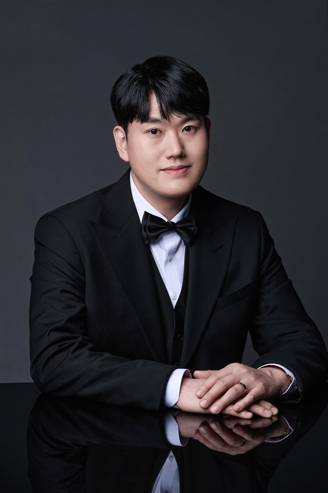
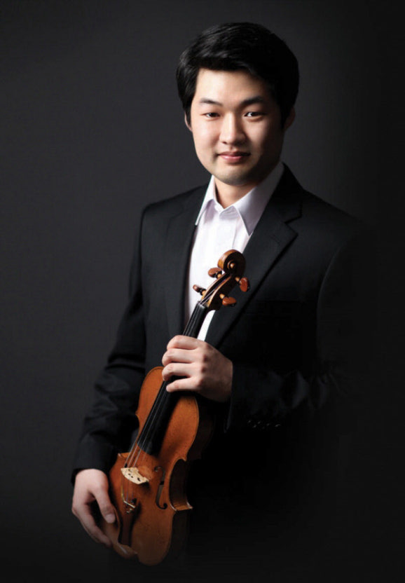
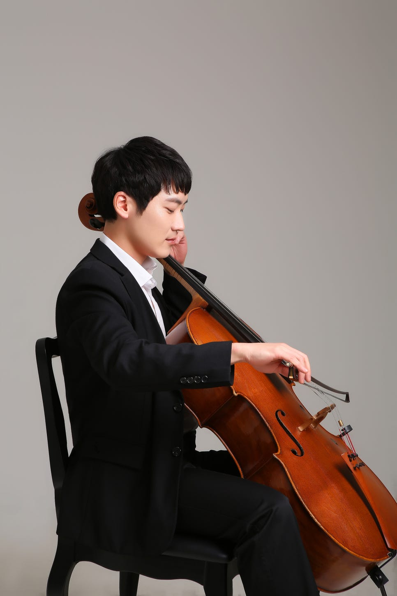

이창준 피아노
- 전남대학교 의과대학 졸업, 의학박사
- 호남신학대학교 교회음악대학원 피아노 석사 졸업
- 전남대학교병원 이비인후과 진료교수 역임
- 현 전남대학교 의과대학 외래교수 및 퍼스트이비인후과의원 원장
FIRST TRIO는 피아니스트 이창준, 바이올리니스트 윤성근, 첼리스트 최승욱이 함께하는 피아노 트리오입니다. 이번 공연에서는 베토벤, 라흐마니노프, 브람스의 작품을 통해 피아노와 현악기가 나누는 다채로운 음악적 대화를 선보이고자 합니다.



Ludwig van Beethoven 루트비히 판 베토벤
스물여섯의 베토벤이 1797년 빈에서 쓴 초기 트리오로, 본래 클라리넷·첼로·피아노를 위해 작곡되었습니다. 3악장은 당시 빈에서 크게 유행하던 바이글의 오페라 《L'amor marinaro》 속 아리아 ‘Pria ch'io l'impegno’를 주제로 한 아홉 개의 변주곡인데, ‘가센하우어’는 거리에서 누구나 흥얼거리던 유행가라는 뜻으로 여기서 붙은 별명입니다. 밝고 재치 있는 젊은 베토벤의 얼굴을 만나는 곡입니다.
Sergei Rachmaninoff 세르게이 라흐마니노프
1892년 1월, 모스크바 음악원에 다니던 열여덟 살의 라흐마니노프가 며칠 만에 완성한 단악장 트리오입니다. 피아노가 나지막이 꺼내는 비가의 주제를 현악기가 받아 노래하며 격정으로 치닫고, 마지막에는 그 주제가 장송행진곡이 되어 조용히 사라집니다. 이듬해 차이콥스키의 죽음을 애도하며 쓴 2번과 ‘비가적 트리오’라는 이름을 나누지만, 1번에 담긴 것은 특정한 슬픔이라기보다 젊은 날의 우수에 가깝습니다.
Johannes Brahms 요하네스 브람스
스무 살의 브람스가 1854년에 발표한 첫 실내악 출판작을, 35년이 지난 1889년 쉰여섯의 브람스가 대폭 고쳐 쓴 판본입니다. 그는 출판사에 ‘새 가발을 씌운 게 아니라 머리를 조금 빗겨 주었을 뿐’이라고 농담했지만, 실제로는 스케르초를 제외한 세 악장을 거의 새로 썼습니다. 피아노와 첼로가 넓게 노래하며 여는 1악장의 주제에는 청년의 열정이, 그것을 다듬은 손길에는 노대가의 절제가 함께 담겨 있어, 한 사람의 젊음과 성숙을 한 곡 안에서 듣게 됩니다.
프로그램은 연주자 사정에 따라 일부 변경될 수 있습니다.
광주예술의전당 소극장
광주 북구 북문대로 60 (운암동)
예술의전당 주차장을 이용하실 수 있습니다. 공연 당일은 주차가 혼잡하니 30분 정도 여유를 두고 오시기를 권합니다.